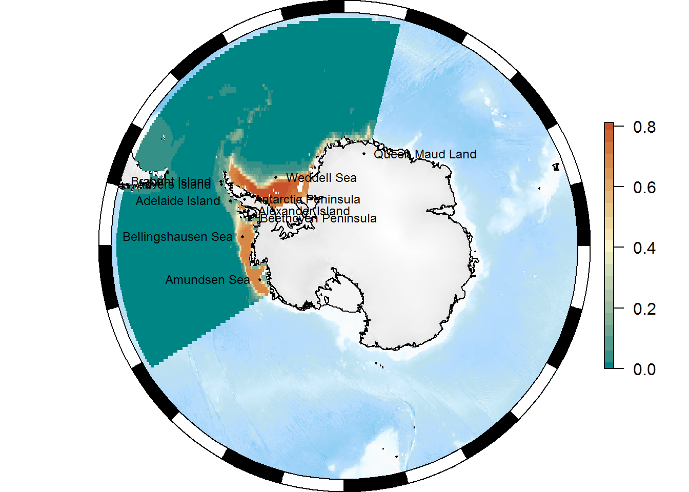

4 Overview
An example analysis that very briefly demonstrates some of the tasks that we’ll tackle during the workshop.
4.1 Preparation
Make sure we have the packages we need from CRAN:
pkgs <- c("dplyr", "ncdf4", "raster", "remotes", "robis", "worrms")
pkgs <- setdiff(pkgs, installed.packages()[, 1])
if (length(pkgs) > 0) install.packages(pkgs)
library(dplyr)And from GitHub:
## packages with required minimum version
pkgs <- c("SCAR/antanym" = NA, "AustralianAntarcticDivision/blueant" = NA,
"AustralianAntarcticDivision/SOmap" = "0.3.0")
for (pkg in names(pkgs)) {
if (!basename(pkg) %in% installed.packages()[, 1] ||
(!is.na(pkgs[[pkg]]) && packageVersion(basename(pkg)) < pkgs[[pkg]])) {
remotes::install_github(pkg)
}
}4.2 Taxonomy
library(worrms)
my_species <- "Euphausia crystallorophias"
tax <- wm_records_names(name = my_species)
tax## [[1]]
## # A tibble: 1 x 27
## AphiaID url
## <int> <chr>
## 1 236216 http://www.marinespecies.org/aphia.php?p=taxdetails&id=236216
## scientificname authority status
## <chr> <chr> <chr>
## 1 Euphausia crystallorophias Holt & Tattersall, 1906 accepted
## unacceptreason taxonRankID rank valid_AphiaID
## <lgl> <int> <chr> <int>
## 1 NA 220 Species 236216
## valid_name valid_authority parentNameUsageID
## <chr> <chr> <int>
## 1 Euphausia crystallorophias Holt & Tattersall, 1906 110673
## kingdom phylum class order family genus
## <chr> <chr> <chr> <chr> <chr> <chr>
## 1 Animalia Arthropoda Malacostraca Euphausiacea Euphausiidae Euphausia
## citation
## <chr>
## 1 Siegel, V. (Ed) (2019). World Euphausiacea Database. Euphausia crystallo~
## lsid isMarine isBrackish
## <chr> <int> <lgl>
## 1 urn:lsid:marinespecies.org:taxname:236216 1 NA
## isFreshwater isTerrestrial isExtinct match_type modified
## <lgl> <lgl> <lgl> <chr> <chr>
## 1 NA NA NA exact 2010-03-02T17:11:18.233Z## the Aphia ID (taxonomic ID) of our species
my_aphia_id <- tax[[1]]$valid_AphiaID4.3 Occurrences
Get all data from the Antarctic Euphausiacea occurence data from “German Antarctic Marine Living Resources” (GAMLR) Expeditions data set:
library(robis)
x <- occurrence(datasetid = "cb16377b-56a8-4d95-802d-4eec02466773")Plot the complete distribution of samples in black, and Euphausia crystallorophias in green:
library(SOmap)
SOmap_auto(x$decimalLongitude, x$decimalLatitude, input_lines = FALSE, pcol = "black", pcex = 0.2)
with(x %>% dplyr::filter(aphiaID == my_aphia_id),
SOplot(decimalLongitude, decimalLatitude, pch = 19, cex = 0.2, col = "green"))Or as a polar stereo map:
basemap <- SOmap(trim = ceiling(max(x$decimalLatitude))+1, bathy_legend = FALSE)
plot(basemap)
SOplot(x$decimalLongitude, x$decimalLatitude, pch = 19, cex = 0.2, col = "black")
with(x %>% dplyr::filter(aphiaID == my_aphia_id),
SOplot(decimalLongitude, decimalLatitude, pch = 19, cex = 0.2, col = "green"))
We’re going to fit a species (presence/absence) distribution model, so first let’s reorganise our data into presence/absence by sampling site:
xfit <- x %>% dplyr::rename(lon = "decimalLongitude", lat = "decimalLatitude") %>%
group_by(lon, lat) %>%
dplyr::summarize(present = any(my_aphia_id %in% aphiaID))4.4 Environmental data
library(blueant)
## put the data into a temporary directory
my_data_directory <- tempdir()
## the data source we want
data_source <- sources_sdm("Southern Ocean marine environmental data")
## fetch the data
status <- bb_get(data_source, local_file_root = my_data_directory, verbose = TRUE)##
## Mon Sep 02 08:43:35 2019
## Synchronizing dataset: Southern Ocean marine environmental data
## Source URL https://data.aad.gov.au/eds/4742/download
## --------------------------------------------------------------------------------------------
##
## this dataset path is: C:\Users\ben_ray\AppData\Local\Temp\Rtmpq0b7Uf/data.aad.gov.au/eds/4742
## building file list ... done.
## downloading file 1 of 1: https://data.aad.gov.au/eds/4742/download ... done.
## decompressing: C:\Users\ben_ray\AppData\Local\Temp\Rtmpq0b7Uf/data.aad.gov.au/eds/4742/download.zip ... extracting 60 files into C:/Users/ben_ray/AppData/Local/Temp/Rtmpq0b7Uf/data.aad.gov.au/eds/4742 ... done.
##
## Mon Sep 02 08:45:42 2019 dataset synchronization complete: Southern Ocean marine environmental datanc_files <- Filter(function(z) grepl("\\.nc$", z), status$files[[1]]$file)
## create a raster stack of all layers
env_stack <- stack(nc_files)
## the first few layers
head(names(env_stack))## [1] "chla_ampli_alltime_2005_2012" "chla_max_alltime_2005_2012"
## [3] "chla_mean_alltime_2005_2012" "chla_min_alltime_2005_2012"
## [5] "chla_sd_alltime_2005_2012" "depth"Select just the depth and ice_cover_mean layers and extract their values at our sampling locations:
env_stack <- subset(env_stack, c("depth", "ice_cover_mean"))
temp <- as.data.frame(raster::extract(env_stack, xfit[, c("lon", "lat")]))
xfit <- bind_cols(xfit, temp)
head(xfit)## # A tibble: 6 x 5
## # Groups: lon [5]
## lon lat present depth ice_cover_mean
## <dbl> <dbl> <lgl> <dbl> <dbl>
## 1 -122. -73.2 TRUE -660. 0.730
## 2 -122. -73.2 FALSE -660. 0.730
## 3 -121. -72.6 FALSE -1409. 0.747
## 4 -121. -72.6 FALSE -1409. 0.747
## 5 -121. -72.1 FALSE -1764. 0.726
## 6 -121. -72.1 FALSE -1764. 0.7264.5 Fit model
We have presence/absence data, so we’ll fit a simple binomial model. The probability of presence of Euphausia crystallorophias is fitted as a smooth function of depth and mean sea ice cover:
library(mgcv)
fit <- gam(present ~ s(depth) + s(ice_cover_mean), family = binomial, data = xfit)
summary(fit)##
## Family: binomial
## Link function: logit
##
## Formula:
## present ~ s(depth) + s(ice_cover_mean)
##
## Parametric coefficients:
## Estimate Std. Error z value Pr(>|z|)
## (Intercept) -4.3728 0.3402 -12.85 <2e-16 ***
## ---
## Signif. codes: 0 '***' 0.001 '**' 0.01 '*' 0.05 '.' 0.1 ' ' 1
##
## Approximate significance of smooth terms:
## edf Ref.df Chi.sq p-value
## s(depth) 3.029 3.792 42.03 2.33e-08 ***
## s(ice_cover_mean) 8.501 8.923 206.88 < 2e-16 ***
## ---
## Signif. codes: 0 '***' 0.001 '**' 0.01 '*' 0.05 '.' 0.1 ' ' 1
##
## R-sq.(adj) = 0.265 Deviance explained = 32.5%
## UBRE = -0.64176 Scale est. = 1 n = 2390The fits to depth and ice cover:
plot(fit, pages = 1, shade = TRUE)This suggests that we are more likely to find Euphausia crystallorophias in shallow areas with high annual ice cover, which seems plausible given that this species is typically found in coastal/shelf waters.
4.6 Predict from model
xpred <- expand.grid(lon = seq(from = floor(min(xfit$lon)), to = ceiling(max(xfit$lon)), by = 0.25),
lat = seq(from = floor(min(xfit$lat)), to = ceiling(max(xfit$lat)), by = 0.25))
xpred <- bind_cols(as.data.frame(xpred), as.data.frame(raster::extract(env_stack, xpred[, c("lon", "lat")])))
xpred$predicted <- predict(fit, newdata = xpred, type = "response")
## create raster
pr <- rasterFromXYZ(xpred[, c("lon", "lat", "predicted")])
projection(pr) <- "+proj=longlat +datum=WGS84"
my_cmap <- if (getRversion() >= "3.6") hcl.colors(21, "Geyser") else c("#008585", "#359087", "#539B8A", "#6DA590", "#85AF97", "#9BBAA0", "#AEC4AA", "#BED0B0", "#D0DCB5", "#E5E7BC", "#FBF2C4", "#F3E3B2", "#EDD59F", "#E7C68C", "#E3B77A", "#DEA868", "#DA9857", "#D58847", "#D1773A", "#CC6530", "#C7522B")Plot it:
p <- SOmap_auto(x = pr, bathy = pr)
p$bathy_palette <- my_cmap
pplot(basemap)
SOplot(pr, col = my_cmap)
4.7 Other bits and pieces
4.7.1 Place names
library(antanym)## The Composite Gazetteer of Antarctica is made available under a CC-BY license.
## If you use it, please cite it:
## Composite Gazetteer of Antarctica, Scientific Committee on Antarctic Research. GCMD Metadata (http://gcmd.nasa.gov/records/SCAR_Gazetteer.html)## get full SCAR gazetteer data
xn <- an_read(cache = "session", sp = TRUE)
## reduce to one name per feature
xn <- an_preferred(xn, origin = "United Kingdom")
## ask for suggestions in our region to show on our map
xns <- an_suggest(xn, map_scale = 20e6, map_extent = extent(pr))
## transform to our map projection, convert to data frame, take the top 10
xns <- as_tibble(SOproj(xns, target = basemap$projection)) %>% head(10)Add them to the map:
plot(basemap)
SOplot(pr, col = my_cmap)
## placename points
with(xns, points(x = longitude, y = latitude, pch = 16, cex = 0.4))
## and labels
with(xns, text(x = longitude, y = latitude, labels = place_name,
cex = 0.75, pos = 2 + 2*(seq_len(nrow(xns)) %% 2)))